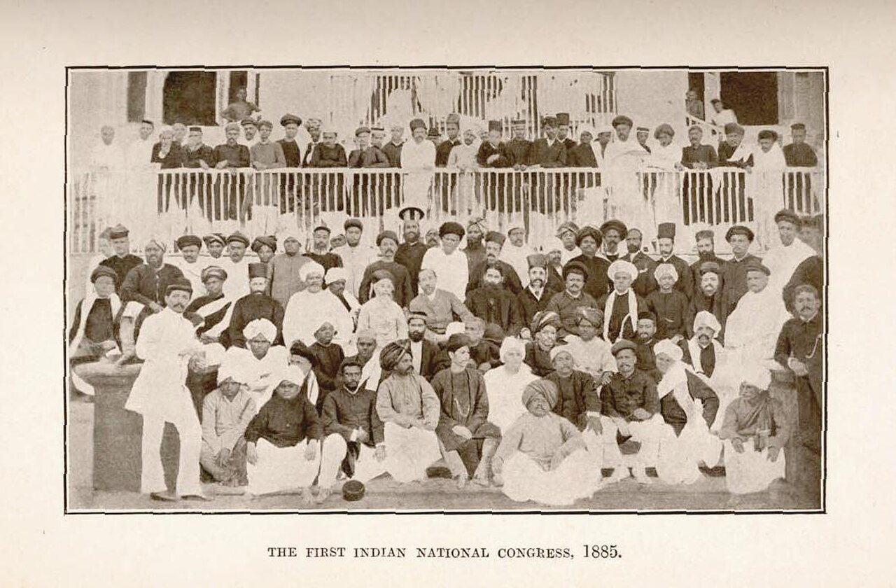
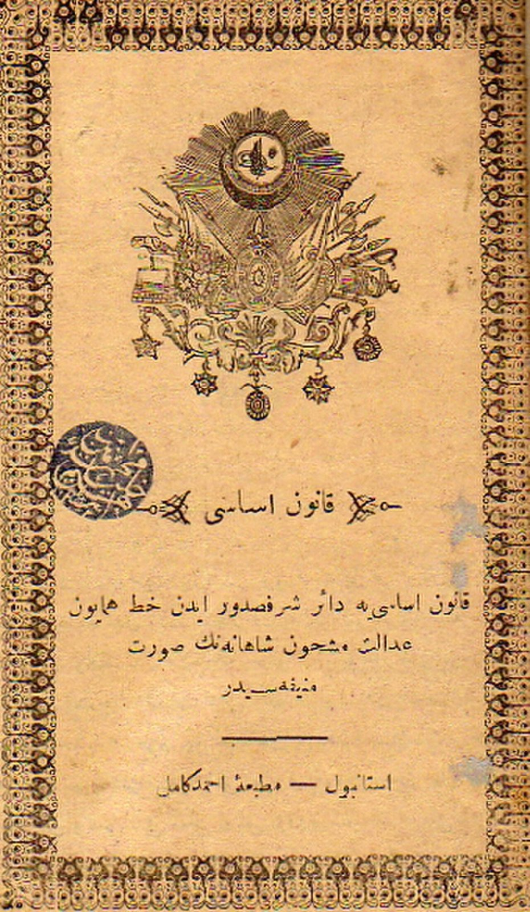
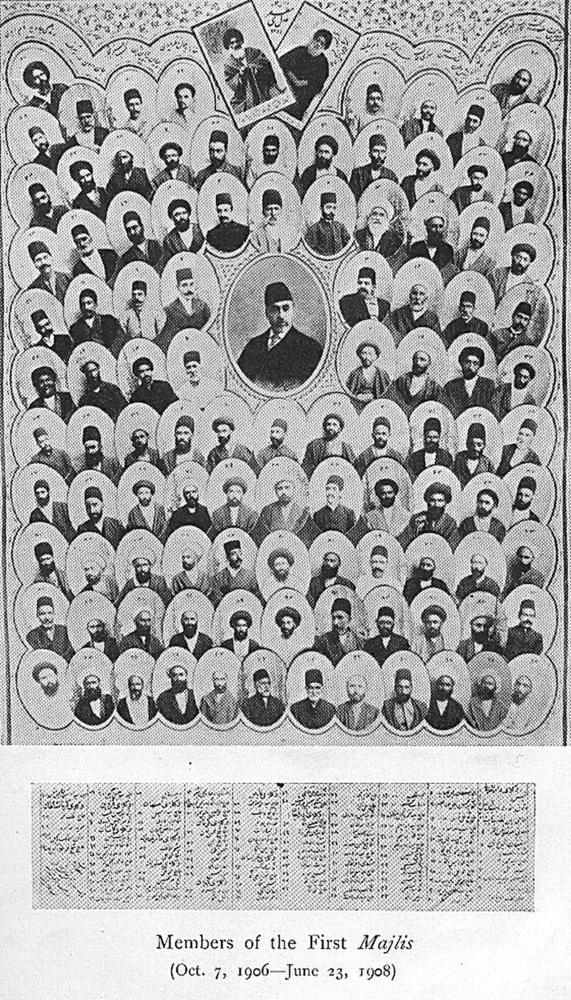

사진 · 제1회 인도 국민 회의
중학교 역사① · 5단원 제국주의와 국민 국가 건설 운동
회의인도·서아시아의 국민 국가 건설 운동
제1회 인도 국민 회의(봄베이, 1885) · 퍼블릭 도메인
“인도와 서아시아 사람들은
인도와 서아시아 사람들은
어떤 나라를 꿈꾸었을까?
사실저항 · 개혁 · 헌법
해석안의 개혁과 밖의 압력
확장이루지 못한 꿈
1857
사실세포이들이 들고일어나다
해석반란일까, 첫 독립 전쟁일까
확장1858 영국 정부의 직접 통치
사진 · 처음에는 무엇을
요구했을까?
처음에는 무엇을
요구했을까?
사실1885 인도 국민 회의
해석영국 안에서 인도인의 몫
확장스와라지(자치)까지
제1회 인도 국민 회의(봄베이, 1885) · 퍼블릭 도메인
1905
사실벵골 분할령
해석힌두교도와 무슬림을 나누다
확장영국 물건을 사지 말자
탄지마트
사실1839~1876 오스만의 개혁
해석종교와 상관없이 법 앞에 평등
확장빚과 열강의 간섭

사진 · 헌법은
얼마나 살아 있었을까?
헌법은
얼마나 살아 있었을까?
사실1876 오스만 헌법
해석1878 술탄이 헌법을 멈추다
확장1908 청년 튀르크 혁명
오스만 제국 헌법 「카누니 에사시」(1876) · 퍼블릭 도메인

사진 · 이 의원들은
어떻게 뽑혔을까?
이 의원들은
어떻게 뽑혔을까?
사실1906 이란 입헌 혁명
해석상인 · 성직자 · 지식인
확장1907 영국과 러시아의 분할 협정
이란 제1대 의회 의원들(1906~1908) · 퍼블릭 도메인
수에즈 운하
사실1869 개통
해석근대화 비용, 외국 빚
확장1882 영국의 점령
서아시아의 세 가지 길
개혁탄지마트
헌법오스만 · 이란
저항이집트 · 불매 운동
종교 운동아라비아의 와하브 운동
꿈은 사라졌을까?
사실1947 인도 독립 · 1923 터키 공화국
해석실패한 헌법이 남긴 것
확장6단원 민족 운동으로
“인도와 서아시아의 국민 국가 건설이 어려웠던 까닭은 이다.